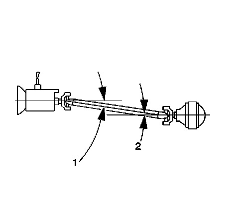
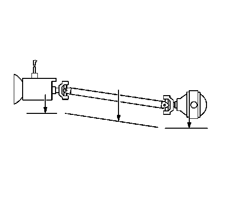
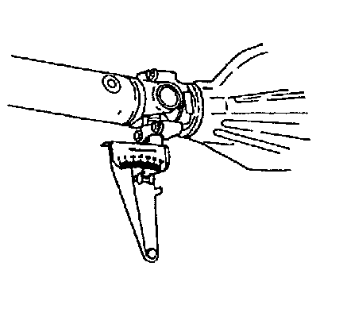

Driveline Working Angles Measurement
Driveline Working Angles Measurement
Tools Required
* J 23498-A Driveshaft Inclinometer, or equivalent
* J 23498-20 Driveshaft Inclinometer Adapter, or equivalent
Important: This measurement procedure is intended to measure U-joints working angles only, not constant velocity (CV) joint or coupler assembly working angles.
Important: This procedure is intended to be used for vehicles where the following conditions are met:
* Vehicle trim heights are within specification guidelines.
* The vehicle exhibits no signs of aftermarket modifications that may affect driveline working angles.
* The vehicle exhibits no signs of accident damage which may affect the position of the drive axle, or axles, the propeller shaft support bearing, if equipped, or the transmission or transfer case, if equipped.

The working angle of a U-joint is formed by the difference between the angles of any 2 shafts that intersect. Propeller shaft systems that have 1 U-joint have 1 working angle; systems with 2 U-joints have 2 working angles, and so on. In a typical 1-piece prop system with 2 U-joints, the working angles are front (1) and rear (2):
* The front working angle (1) is formed by the intersection of the transmission or transfer case output shaft and the prop shaft.
* The rear working angle (2) is formed by the intersection of the prop shaft and the drive axle pinion.
Important: When measuring and evaluating U-joint working angles, observe the following:
* No U-joint working angle should be equal to zero. An angle of 0 degrees will cause premature U-joint wear due to a lack of rotation of the needle bearings in the U-joint.
* No U-joint working angle should exceed 4 degrees.
* Prop systems containing only 1 U-joint: The U-joint working angle should be within the range specified in this procedure.
* Prop systems containing 2 or 3 U-joints: The 2 U-joint angles each formed with the prop shaft that contains 2 welded yokes are designed to cancel each other during operation. These 2 working, or cancelling U-joint angles should be equal to each other within the range specified in this procedure provide effective cancellation of the U-joints.
* Prop systems containing 3 U-joints: The U-joint angle formed by the prop shaft that contains only 1 welded yoke is an odd, or non-cancelled angle. This working angle should be within the range specified in this procedure.
* Always orientate the J 23498-A so that it faces the same side of the vehicle for each measurement taken.

* Be sure to accurately record the measurements taken on a diagram, similar to the one shown.
Measurement Procedure
Important: If it is necessary to use the J 23498-20 , or equivalent adapter, first verify the accuracy of the J 23498-20 , or equivalent by inspecting the angle of an accessible joint using the J 23498-A , or equivalent, then inspecting the same joint angle using the J 23498-20 , or equivalent.
1. For vehicles with solid axles, ensure that the vehicle has a full tank of fuel or the equivalent amount of weight in the correct location to simulate a full tank. The weight of 3.8 L (1 gal) of gasoline is approximately 2.8 kg (6.2 lb).
2. Raise and support the vehicle. On vehicles with solid axles, ensure that the drive axle is supported at ride height-vehicle body supported by suspension components. Suspension travel will not affect driveline angles on vehicles with direct-mounted drive axles. Ensure the wheels are free to rotate. Refer to Lifting and Jacking the Vehicle (Service and Repair) .
3. For vehicles with 2-piece prop shaft systems, inspect the lateral alignment of the propeller shafts before proceeding:
1. From underneath the propeller shafts, look down the length of the shafts from front to rear. Inspect the alignment of the shafts to each other.
2. From underneath the shafts, if the propeller shafts are not aligned to each other in a straight line, then the lateral alignment of the prop shafts needs to be adjusted before proceeding.
The propeller shaft support bearing assembly can be relocated slightly to one side in order to improve the alignment of the shafts. Ensure that you do not create a ground-out condition against the exhaust or any other component.
4. Place the transmission in NEUTRAL.
5. Clean any corrosion or foreign material from the U-joint bearing caps.
6. Remove any of the U-joint bearing cap snap rings that may interfere with the correct placement of the J 23498-A , or equivalent .

7. For all prop systems perform the first measurement:
1. Rotate the prop shaft to align the rear-most yoke flanges vertically.
2. Install the J 23498-A , or equivalent to the lower U-joint bearing cap of the rear-most yoke. This yoke may be part of a prop shaft, torque tube input shaft, or a drive axle pinion shaft. Measure and record the angle of the shaft.
8. For prop systems with 2 or 3 U-joints, perform this additional measurement:
Without rotating the prop, install the J 23498-A , or equivalent to the lower U-joint bearing cap of the forward-most, vertically-aligned yoke. This yoke may be part of a prop shaft, transmission output shaft, or a transfer case output shaft. Measure and record the angle of the shaft.
9. For all prop systems perform the second measurement:
1. Rotate the prop shaft 1/4 turn to vertically align the flanges of the forward yoke that mates to the rear-most yoke.
2. Install the J 23498-A , or equivalent to the lower U-joint bearing cap of the forward mating yoke. This yoke may be part of a prop shaft, transmission output shaft, or a transfer case output shaft. Measure and record the angle of the shaft.
10. For prop systems with 3 U-joints, perform this additional measurement:
Without rotating the prop, install the J 23498-A , or equivalent to the lower U-joint bearing cap of the forward-most, vertically-aligned yoke. This yoke may be part of a transmission output shaft, or a transfer case output shaft. Measure and record the angle of the shaft.
11. Remove the J 23498-A , or equivalent .
12. Install any U-joint bearing cap snap rings that were removed prior to installing the J 23498-A , or equivalent .
13. Calculate the U-joint working angle at each intersection of two shafts.
Subtract the larger number from the smaller to obtain the working angle. For example: If the drive axle pinion has an angle of 16 degrees and the connecting propeller shaft has an angle of 13 degrees, then the working angle of that intersection is 3 degrees.
14. For prop systems with 1 U-joint; compare the working angle to the following specification guideline:
Prop systems containing only 1 U-joint: The U-joint working angle should be between 1/2 and 3/4 degrees.
15. For prop systems with 2 or 3 U-joints; compare the difference between the working angles of the cancelling U-joints to the following specification guidelines:
Allowable range of difference between cancelling U-joint working angles: 0.25 to 1.0 degrees
16. For prop systems with 3 U-joints; compare the working angle of the odd, or non-cancelled U-joint to the following specification guideline:
Prop systems containing 3 U-joints: The odd, or non-cancelled U-joint working angle should be between 1/10 and 1/2 degrees.
17. Any working angle that is not within the specification guidelines requires adjustment.